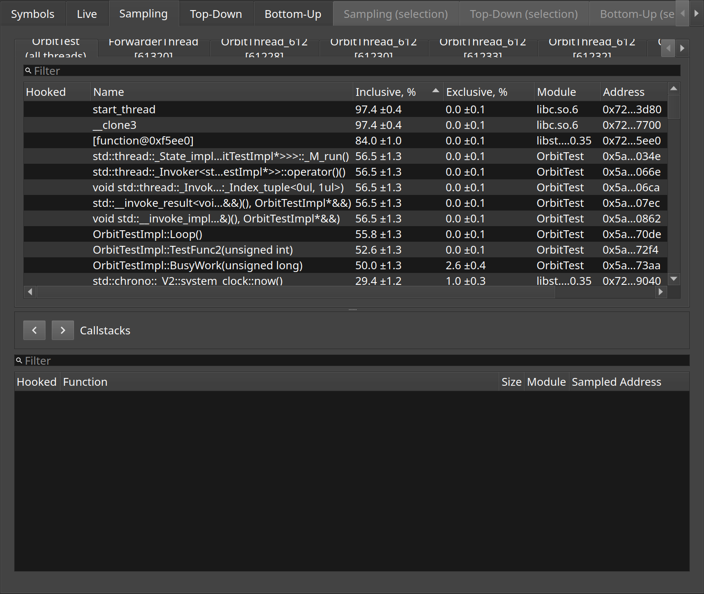

Sampling
Where the target spent its time, from periodically recorded callstacks rather than from instrumentation.
Instrumentation only sees functions that were asked for by name. Sampling sees everything: Orbit interrupts the target at a fixed rate and records where each thread was, so that a function nobody thought to instrument still shows up if it is where the time goes.
The upper list ranks functions by how often a sample landed in them. Selecting one shows, below, the callstacks those samples came from.
